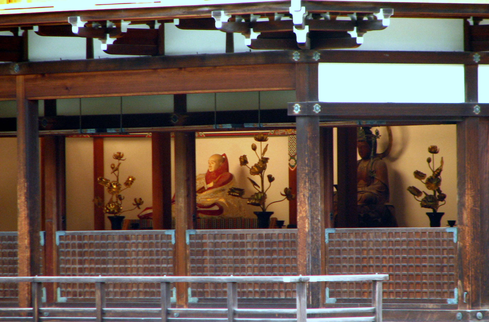
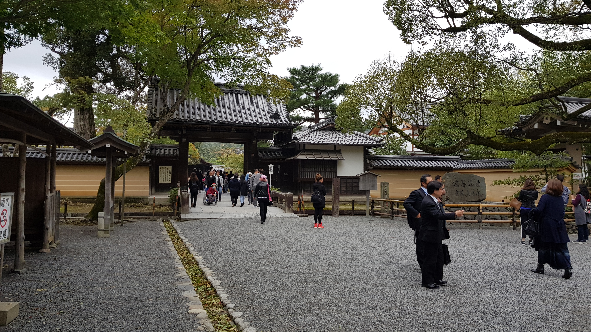

About
Kinkaku-ji (金閣寺; lit. 'Temple of the Golden Pavilion'), officially named Rokuon-ji (鹿苑寺; lit. 'Deer Garden Temple'), is a Zen Buddhist temple in Kyoto, Japan and a tourist attraction.
It is designated as a World Heritage Site, a National Special Historic Site, a National Special Landscape, and one of the 17 Historic Monuments of Ancient Kyoto.The temple is nicknamed after its reliquary (shariden), the Golden Pavilion (金閣, Kinkaku), whose top two floors are coated in 0.5 μm gold leaf.
The current pavilion was rebuilt in 1955 after being destroyed in an arson attack.
Related Link
Kinkaku-Ji Info on Shokoku-ji Official Sites
(https://www.shokoku-ji.jp/en/kinkakuji/)
Kinkaku-ji Information by Japan Guide
(https://www.japan-guide.com/e/e3908.html)
Location
〒603-8361 京都府京都市北区金閣寺町１
1 Kinkakuji-cho, Kita-ku, Kyoto 603-8361 Japan
Gallery

By Bernard Gagnon - Own work, CC BY-SA 3.0, Link

By Bernard Gagnon - Own work, CC BY-SA 3.0, Link